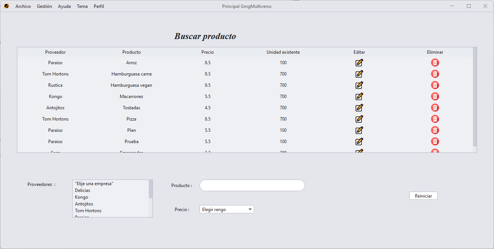
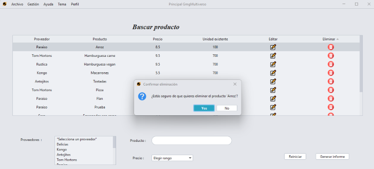
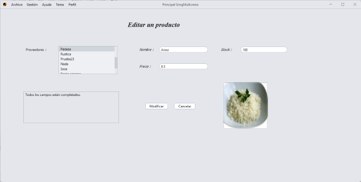
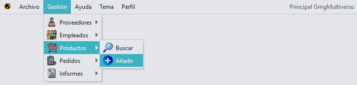
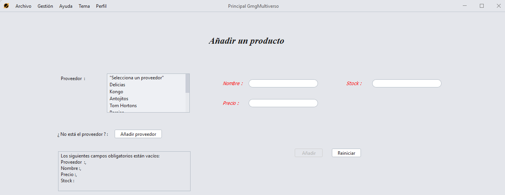

Buscar
un producto
Para acceder a la sección de busqueda de un producto, tenemos que
pulsar en la sección "Gestión" en el menú superior, pulsar "Productos"
y luego "Buscar".

Observaremos una tabla y 2 elementos por los cuales podremos filtrar,
por nombre de un proveedor,
por nombre de un producto
y por rando de precios.
Además, se puede filtrar tanto por separado como en conjunto, es decir,
puedes filtrar solo por proveedor o solo por producto o solo por
precios, o filtrar primero por ejemplo por proveedor y luego por
producto, te saldrá una búsqueda conjunta.

Eliminar
/ Editar un producto
Pulsando en la tabla el icono de una papelera
se eliminará el producto.

Para editar un producto, solo tenemos que pulsar el icono de
un lápiz
para que se nos cargue la opción de editar del producto seleccionado.

Añadir
un producto
Para acceder a la sección de añadir un producto, tenemos que pulsar en
la sección "Gestión" en el menú superior, pulsar "Productos" y luego
"Añadir".

Para poder añadir un producto, hay que rellenar todos los
campos obligatorios.

GMG Multiverso